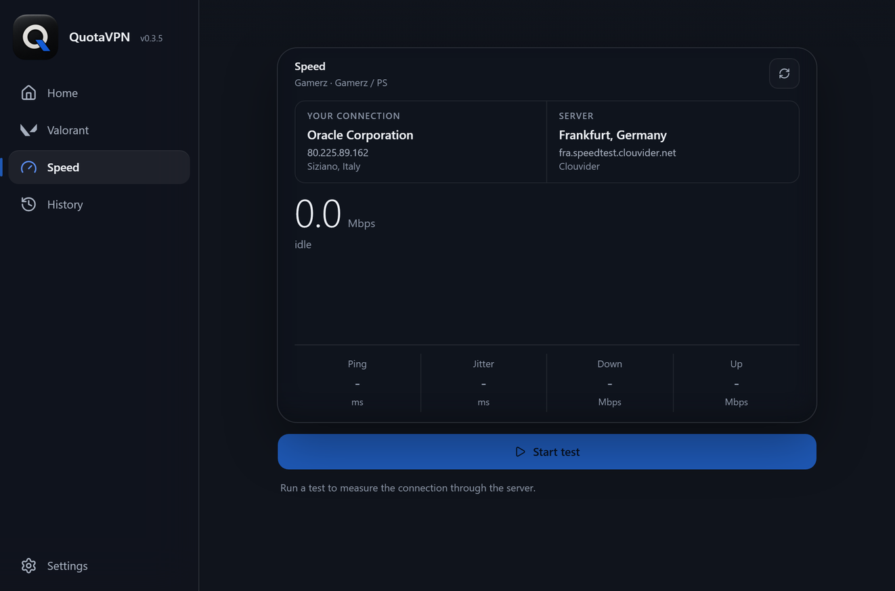

Play and stream on the quota you picked.
QuotaVPN puts your package's name on every session, so games and streams spend from that quota instead of your general one.
Windows and Android · free and open source · no account
ScrollWhere your traffic says it comes from.
Your ISP files each session by the server name in its handshake. QuotaVPN writes that name from the package you picked.
Every control in one window.
Package, routing, transport, connect. The demo below is the real build.
The real app, not a video of it.
Press anything: it is the shipped build, running right here.

What it does
Two apps, one engine, one routing table.
Each package carries its own server list, so a session rides the package that should pay for it.
Only the voice traffic moves. Your match connection stays direct.
Standard, WireGuard, Hysteria2, each labelled with what it spends from.
Saved, and it survives restarts.
No admin on Windows. The APK sideloads once and keeps itself current.
Voice chat, when your region blocks it.
Some regions block Valorant voice chat. One switch in the app fixes that.
One switch, its own tab.
Press Enable: voice rides the tunnel, your match stays direct.

The same app, in your pocket.
Same theme, same packages, same dial.
Nothing was left on the desktop.
Tap through the real Android build below.
Grey idle, blue working, green live.
Gamerz and Streamerz, each with its own server list.
Ping, jitter, download, upload, against the server your traffic rides.
Pull the newest signed APK from inside the app.
Measure the route you are on.
Ping, jitter, download and upload, against the server your traffic actually rides.

How it works
Four steps, nothing to configure.
- 1Pick a package
Gamerz or Streamerz, each with its own server list.
- 2Press connect
The app writes its routing table and opens the tunnel.
- 3Traffic leaves tagged
Games and streams exit with a server name from that package.
- 4It bills that quota
The ISP files the session under your package, not your general quota.
A TLS handshake carrying a server name from the package's whitelist.
Gamerz or Streamerz, whichever you picked.
Questions
What does QuotaVPN actually change?
The server name your ISP reads at the start of each connection. It decides which quota the session counts against.
What is the Valorant voice chat helper?
A switch that routes only voice traffic, leaving your match connection direct.
Does it work with any ISP?
It is built for ISPs that sell your line in quota buckets. On a normal line it still works as a plain VPN.
Do I need an account?
No. No sign up, no account.
Is the Android build a real app or a wrapper?
A native VpnService app with the same Rust core, per-app routing and Always-on VPN.
Get the build
Free, open source, MIT licensed. No account, no sign up.
Windows installs per user and updates itself. The APK sideloads once and keeps itself current. Source on GitHub.